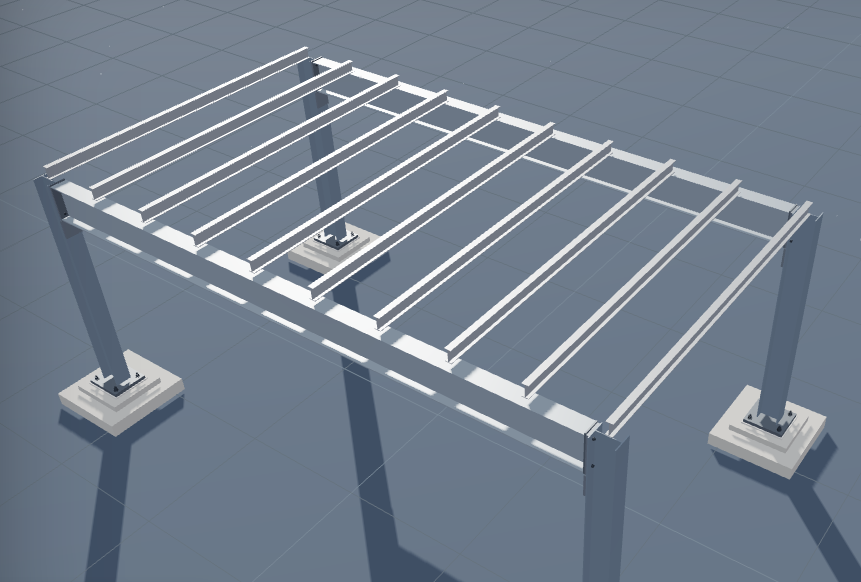
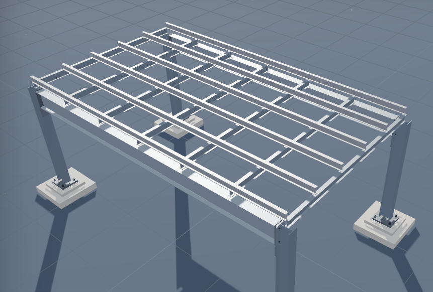

1.5. Компоновка балочной клетки переусложнённого типа
Расстановка вспомогательных балок и балок настила в ячейке
Постановка задачи
В балочной клетке нормального типа балки настила опираются непосредственно на главные балки:

А в балочной клетке усложнённого типа балки настила опираются на вспомогательные балки, а вот они уже, в свою очеред, на главные:

Балки настила опираются на вспомогательные, поэтому их пролётом служит шаг не главных балок $B$, а вспомогательных $a_{\text{в.б.}}$. А вот для вспомогательных балок пролёт равен шагу главных балок $B$.
Толщина настила и его предельный относительный прогиб принимаются такими же, как для нормального типа (п. 1.1) — пролёт настила при этом сохраняется или уменьшается, поэтому проверка настила (п. 1.2) остаётся в силе.
Зачем вообще этим заниматься, если балки уже и так подобрали? Ну типа при таком количестве балок лежащих друг на друге в услажненной схеме рагрузка распределяется равномернее. Благодоря этому сечения у балок можно взять меньше и итоговый расход стали тоже уменишится.
Порядок компоновки
-
Компоновка вспомогательных балок
Задаёте количество вспомогательных балок $k_{\text{в.б.}}$. Да сами решаете сколько взять. Может быть лучше если их будет побольше, а может если поменьше, пока не посчитаешь не узнаешь. Шаг вспомогательных балок (пролёт балок настила) получится :
$$a_{\text{в.б.}} = \frac{L}{k_{\text{в.б.}}}$$Значение принимается удобным для дальнейшей раскладки.
-
Привязка крайних вспомогательных балок
$$b_{\text{в.б.}} = \frac{L - (k_{\text{в.б.}} - 1) \cdot a_{\text{в.б.}}}{2}$$
Условие рациональной компоновки: $$b_{\text{в.б.}} \le \frac{a_{\text{в.б.}}}{2}$$
-
Пролёт настила и шаг балок настила
Пролёт настила $l_{\text{н}}$ принимается не более значения, найденного в п. 1.1 (обычно — равным ему или меньшим). Шаг балок настила:
$$a_{\text{б.н.}} = l_{\text{н}}$$ -
Количество балок настила
$$k_{\text{б.н.}} = \frac{B}{l_{\text{н}}}$$
Округляется до целого числа; по нему уточняется фактический шаг.
-
Привязка крайних балок настила
$$b_{\text{б.н.}} = \frac{B - (k_{\text{б.н.}} - 1) \cdot l_{\text{н}}}{2}$$
Условие рациональной компоновки: $$b_{\text{б.н.}} \le \frac{l_{\text{н}}}{2}$$
Результат раздела
- шаг и количество вспомогательных балок;
- шаг и количество балок настила, привязки крайних балок.
Далее рассчитываются балки настила (п. 1.6) с пролётом $a_{\text{в.б.}}$ и вспомогательные балки (п. 1.7) с пролётом $B$.